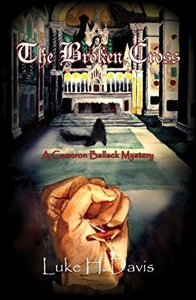

Research
During the 6 week summer research program I participated in (STARS), I had lectures at University of Missouri St. Louis on college and STEM subjects and worked in a lab at Washington University in St. Louis for research. I worked in a Biomedical Engineering lab with Dr. Ruth Okamoto. We worked on recreating white matter in the brain using gelatin and various fibers (Lycra, noodles). While researching, the STARS program helped guide me through the process of writing an official research paper. At the very end of the program, I, and the rest of the students, presented our research in a half-hour long presentation to each other and any other professors or family attending. My paper was titled "Construction and Testing of Anisotropic White Matter Tissue Mimics: a Tool for the Study of Traumatic Brain Injury".
- Received LMI Aerospace Inc. Award for Excellence in Research
For my science fair project, I used the summer research I did with STARS and created a poster. I presented the project at the Honor's Division to 5 judges in total. At the regular science fair I set up my poster and judges looked at it without a presentation.
- 2014 Honors Division Semi-Finalist
- The SunEdison Award
- St. Louis Metropolitan Medical Society Award
- The Society for In Vitro Biology Certificate of Outstanding Achievement
Work Experience
Math Peer Tutor for Calculus I, Calculus I for Science and Engineering, Calculus II for Science and Engineering
Volunteer Experience
- Cleaned puppy kennels
- Assisted potential adopters
- Cleaned dishes
- Cleaned laundry
- Socialized with the cats and puppies
- Sorted the donated clothes
- Organized clothes and furniture
- Tagged clothes for sale
- Displayed clothes
- Restocked hospital equipment
- Cleaned physical therapy machines
- Cleaned and changed outpatient and inpatient beds
- Made hand-out folders for patients
- Worked with Excel and Word to document managerial tasks
- Sorted medical records
I traveled to China for 10 days with 6 other students from my high school and helped lead a Vacation Bible School and English camp for the kids attending this school in China.
Commission Experience
Cover Art for Litany of Secrets (A Cameron Ballack Mystery) by Luke H. Davis

Cover Art for The Broken Cross (A Cameron Ballack Mystery) by Luke H. Davis
